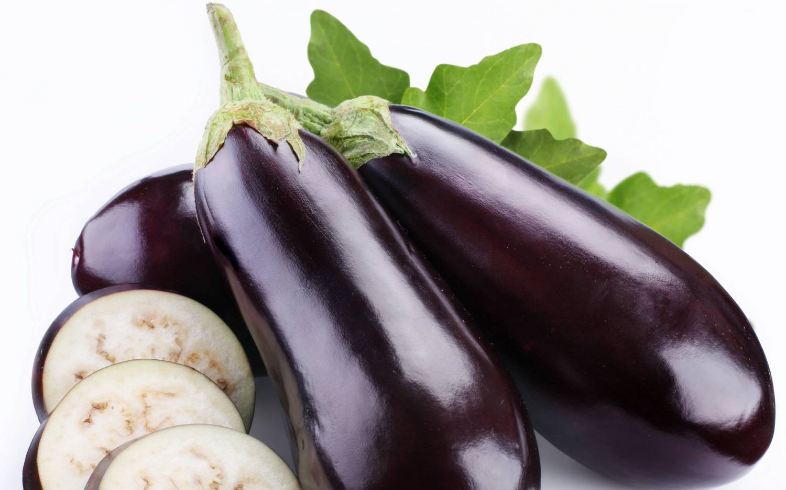
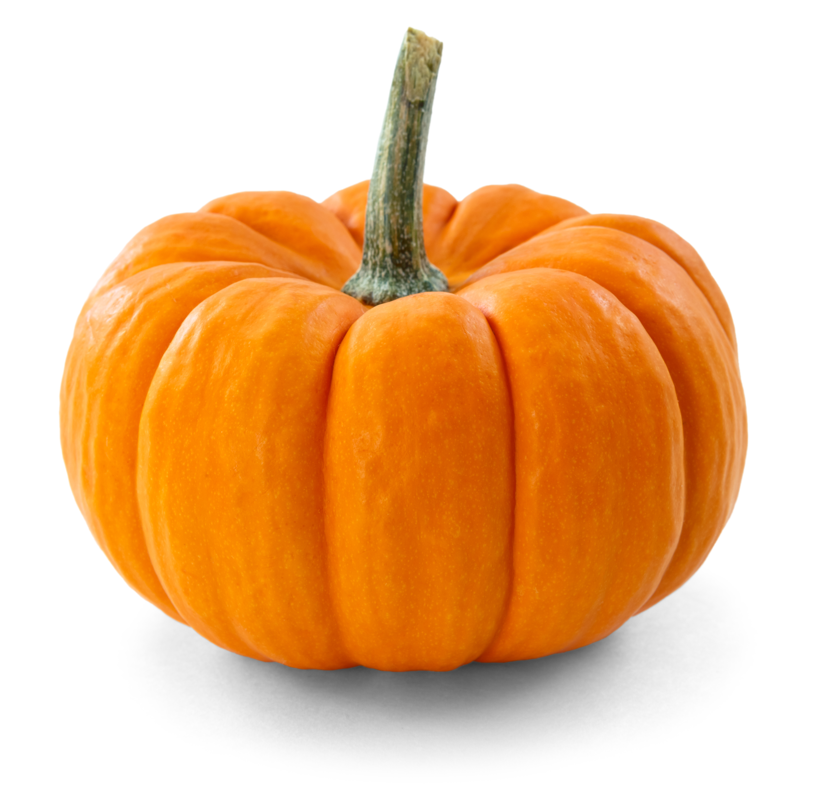

❌
Картофель, или Паслён клубненосный
(лат. Solanum tuberosum), — вид многолетних
клубненосных травянистых
растений из рода Паслён (Solanum)
семейства Паслёновые (Solanaceae).
Клубни картофеля являются
важным пищевым продуктом.
❌
Яблоко — плод яблони, который
употребляется в пищу в свежем
виде, служит сырьём в кулинарии
и для приготовления напитков.
Считается, что родиной яблони
является Центральная Азия.

❌
Томат, или помидор (лат. Solanum lycopersicum)
— однолетнее или многолетнее
травянистое растение, вид рода
Паслён (Solanum) семейства Паслёновые
(Solanaceae). Возделывается как
овощная культура.

❌
Огурец обыкновенный, или Огурец
посевной (лат. Cucumis sativus) — однолетнее
травянистое растение, вид рода
Огурец (Cucumis) семейства Тыквенные
(Cucurbitaceae), овощная культура.

❌
Морковь — двулетнее растение
(редко одно- или многолетнее),
в первый год жизни образует
розетку листьев и корнеплод,
во второй год жизни — семенной куст
и семена. Широко распространена
в Африке, Австралии, Новой
Зеландии и Америке.
❌
Огурец обыкновенный, или Огурец
посевной (лат. Cucumis sativus) — однолетнее
травянистое растение, вид рода
Огурец (Cucumis) семейства Тыквенные
(Cucurbitaceae), овощная культура.

❌
Груша (лат. Pyrus) — род плодовых и
декоративных деревьев и
кустарников. Плод, как правило, —
вытянутой формы с расширением
в нижней части, есть сорта с
шаровидными плодами. В
Швейцарии из плодов груши получают
продукт, называемый «Грушевый мёд».

❌
Баклажан, или Паслён тёмноплодный
(лат. Solanum melongena) — вид многолетних
травянистых растений рода Паслён
(Solanum). Возделывается как
однолетнее растение. Съедобен
только плод. В ботаническом смысле это
ягода, в кулинарном рассматривается
как овощ.
❌
Огурец обыкновенный, или Огурец
посевной (лат. Cucumis sativus) — однолетнее
травянистое растение, вид рода
Огурец (Cucumis) семейства Тыквенные
(Cucurbitaceae), овощная культура.

❌
Тыква (лат. Cucurbita) — род травянистых
растений семейства Тыквенные
(Cucurbitaceae). Всех видов насчитывается
около 20. Многие виды
культивируются как
декоративные (например,
«фигурные тыквы») или ради
съедобных плодов.

❌
Капуста огородная (лат. Brássica olerácea)
— двулетнее растение,
сельскохозяйственная культура;
вид рода Капуста (лат. Brassica) семейства
Капустные (Крестоцветные).
❌
Томат, или помидор (лат. Solanum lycopersicum) —
однолетнее или многолетнее
травянистое растение, вид рода
Паслён (Solanum) семейства Паслёновые
(Solanaceae). Возделывается
как овощная культура.